- JORDEN RUNDT I ELBIL
VI GJORDE DET NÆSTEN UMULIGE !
Ingen havde gjort det før. Elbilerne var knapt nok færdigudviklede og ikke testede, vi var endnu i elbilernes stenalder. Vi fuldførte og skrev historie som de første der kørte jorden rundt i en elbil.
SE DET NYE SPÆNDENDE FOREDRAG:
- Nervepirrende forberedelser, ekstrem hede i Rusland og sammenbrud i Moskva. Nyt sammenbrud i Sibirien og farlige situationer i Mongoliets ørken. Fra Kina gik rejsen tværs over USA hvor "Grønne" blev inviteret indenfor på USA´s største autoshow i Detroit. Gennem snestorme og isnende kulde til New York. Udfordringen på sidste etappe gennem Europa var at deltage i Monte-Carlo Rally for elbiler.
MANGE HILSNER NINA OG HJALTE:
hjalte@moto-mundo.com eller nina@moto-mundo.com
Tlf. 6060 2205 og 27137654
.......................................................................................................................................................................
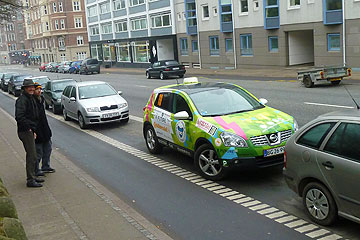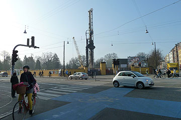
Vi var lige en smuttur i København med Grønne, med Molslinien kan vi nemt komme hele vejen. Ved en byggeplads på Nørrebro fik vi lov til at bruge et elstik, så Grønne kunne få strøm til at køre hjem på. Vi deltog vi en mindehøjtidelighed for de Kurdiske ofre for giftgasangrebet i Halabja, og besøgte også de store underjordiske vandbeholdere i Søndermarken. Grønne holdt godt øje med trafikken og glædede sig over de mange cykler og bygningen af en metrostation på Nørrebro. Men der mangler en ladestander. Sådan en ville stå godt og roligt for enden af Stevnsgade, overfor Kirken under det store træ - skal vi hilse og sige.
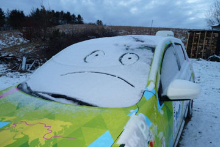
Vågnede under en dyne af sne. Heldigvis betyder det ikke noget for min start-evne, men alligevel...Nu hvor jeg har fået nyt grus på min indkørsel vil jeg gerne have lidt forår. Skal til Aarhus idag, og hygger mig ellers her i det lokale miljø omkring Mørke.
Hilsen fra Grønne
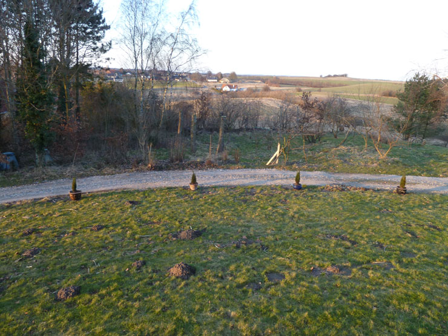
Nu tror vi på at årets sidste sne er faldet. Det er Grønnes tredje forår og vi har lovet den kære bil en undervognsbehandling til sommer, når vinterens salt er skyllet af. Vi har ordnet opkørselen til huset, så bilen ikke sprøjtes til med mudder. Jeg skal hilse og sige at grønne også er meget tilfreds med cypresserne selv om de endnu er lidt små, og slet ikke så flotte som dem i Monaco. Muldvarpene har det også godt.
Nina
 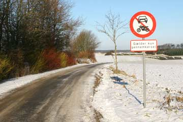
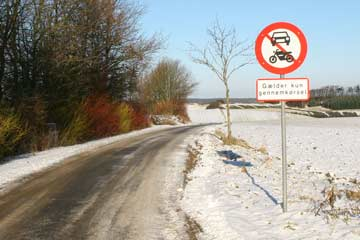
For to uger siden parkerede vi Grønne i Rønde uden at stille p-skiven. Promte landede der en hilsen fra parkeringskontrollen på forruden. ØV. Jeg besluttede at klage med henvisning til at elbiler kunne parkere gratis i København. Idag kom svaret fra parkeringskontrol nord i Ålborg: "Elbiler er ikke fritaget efter bekendtgørelsen i Aalborg kommune." Brevet oplyser at Aalborg kommune udfører parkeringskontrol i et samarbejde med kommuner i Danmark. Jeg må gå ud fra at Syddjurs har samme regler som Aalborg. I København stoppede man i sin begrænsede visdom elbilernes fritagelse for p-afgift 1. dec. 2011. Danmarks regering ønsker flere elbiler og fri parkering er en billig og synlig gulerod. Argumentet imod er, at man ikke kan stille elbiler anderledes end benzinbiler. Men selvfølgelig kan man det! Hvis man vil. Kom nu justitsminister!
Hjalte

Midt i Ålborg ud til Limfjorden ligger Utzons Hus. Tegnet af Jørn og hans søn Kim og en smuk og flot ramme om Utzons livsværk og om ny kreativitet i husets dejlige værksteder. Under det høje buede loft samlede vi 150 rejse- og elbil interesserede. Ålborg Kommune bød velkommen og en lokal familie som havde deltaget i "Prøv en Elbil" delte ud af deres positive erfaringer. Nina iklædte sig til stor moro mongolsk prinsessedragt. Grønne var parkeret foran indgangen til Utzons Hus og mange benyttede efter foredraget lejligheden til at se hvad der skjuler sig under motorhjælmen på en elbil. Elbiler og den praktiske dagligdag nærmer sig hinanden. En stor forandring er på vej.
Hjalte


Jeg, Grønne må fortælle jer om igår: 360 km i minus 15 grader. Min personlige rekord! Nina og Hjalte skulle holde foredrag i Frederikshavn, 180 km mod nord. Jeg blev pakket med videofremviser, hjembragte skatte fra jordomrejsen og de flotte fotobannere. Nina og Hjalte satte sig ind med varmt tøj på. Varmen blev slået fra og afsted gik det. Jeg mærker ikke kulden. Vel fremme i Frederikshavn blev jeg sat til at lade mens Nina og Hjalte hyggede sig på biblioteket til fordraget startede. 160 nysgerrige og glade frederiskshavnere fik et spin jorden rundt og havde mange spørgsmål om os elbiler. Så gik det hjemad og mit udetermometer faldt og faldt. Minus 17 nær Hobro. Jeg tror Nina og Hjalte var glade da de kunne parkere mig foran sekskanthuset. Min længste dag: 360 km!
Grønne.
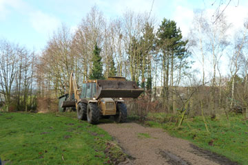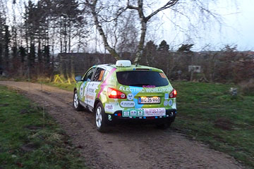
Vi måtte bestille et vognlæs stabilgrus så Grønnes 1700 kilo kunne komme op ad indkørselen. Lastvognen med gruset kunne heller ikke komme op, så gruset blev læsset af nede på vejen. En gummiged måtte rekvireres til at fordele de 8 kubikmeter grus, det var lidt mere end vi kunne klare med en skovl.
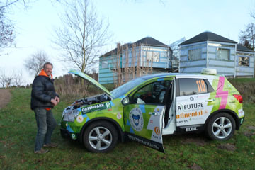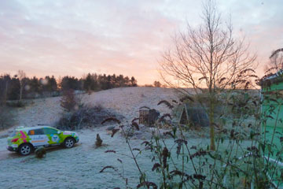
Efter 42.500 kilometer kører Grønne stadig trofast hver dag. Pålideligheden er dens største bedrift. Grønne klarer hverdagen uden problemer, den lader og kører perfekt. Batterierne virker så godt som da de var nye, og rækkevidden er der heller ikke noget at klage på. Om det er frostvejr gør ikke nogen forskel, bortset fra at vi bruger mere strøm til varmeapparatet, og vinduesviskerne. For en elbil er det afgørende at batterierne er af den bedste kvalitet, og at batteripakken er stor nok. Disse krav lever Grønne op til.
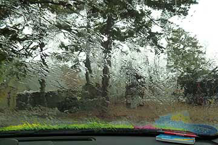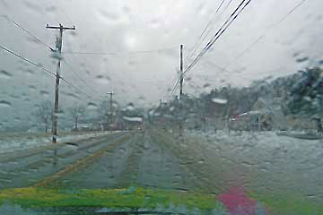
Den lidt stejle opkørsel til vores hus var blevet så glat at Grønne var ved at ramle ind i et træ, da jeg kørte den ned. Da vi skulle hjem igen kunne Grønne ikke komme op fordi dækkene fedtede rundt. Mudderet sprøjtede op på nyvaskede Grønne, en ren elendighed. Vi overvejer et læs stabilgrus. Men ellers er Grønne i fin form, den klarer den daglige kørsel og står og hygger sig med sin ladeledning resten af tiden.